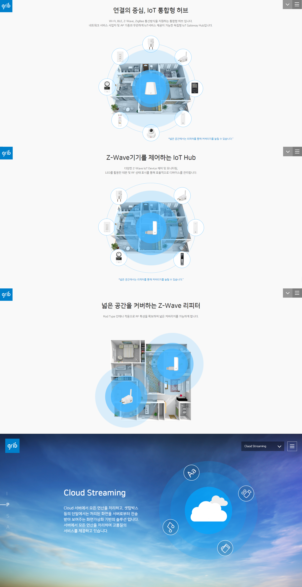
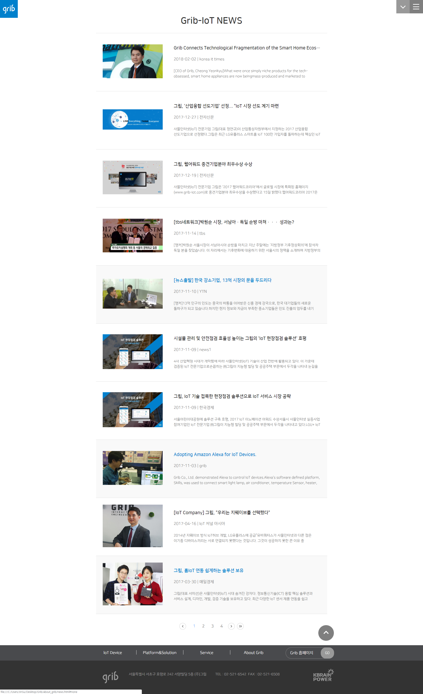
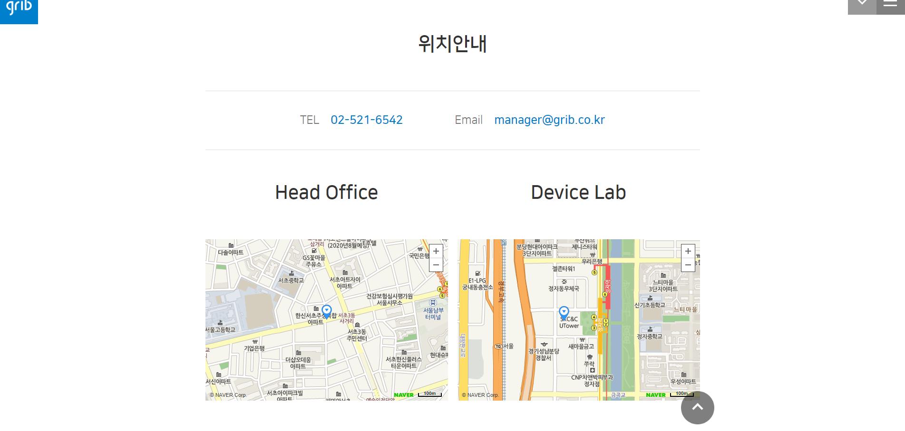
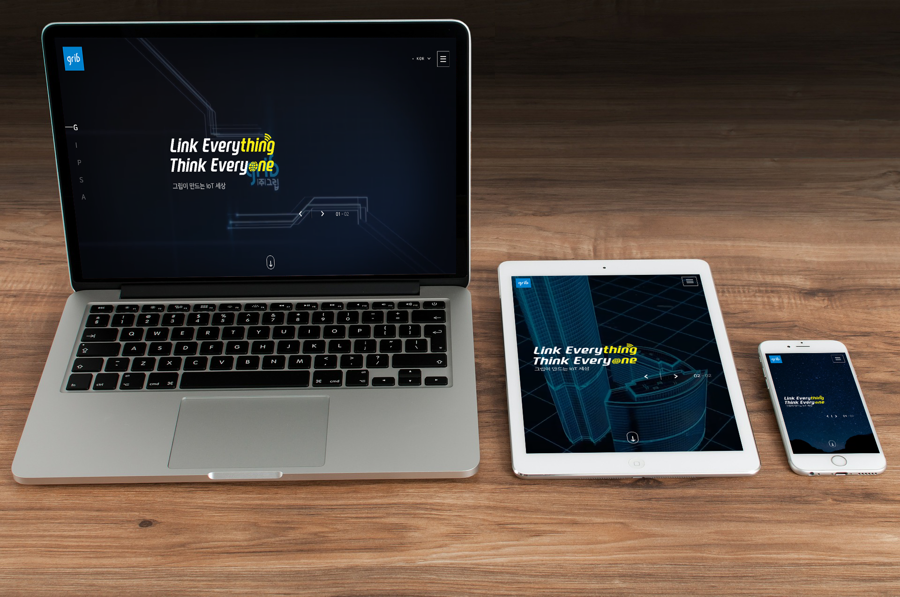

Grib-IoT 포토폴리오
Grib-IoT
2018.11.04
(주)그립의 IoT기기의 활용과 쓰임새 등을 설명 해놓은 사이트로 복잡하지 않고 간단하며 한눈에 들어오는 사이트 구축으로 누구든 쉽게 이해 할 수 있는 웹 페이지로서 좋은 예제라 생각하여 제작하게 되었습니다.

메인 페이지
Grib-IoT의 메인 사이트로 서브 페이지들의 간단한 내용과 서브 페이지로 이동 할 수 있는 링크들이 있습니다. 첫번째 article에서는 동영상 슬라이드를 통하여 Grib 회사의 관한 내용을 설명 하도록 제작하였고 나머지 article에서는 각 서브 페이지의 메인으로 연결 시켜주는 링크 버튼을 제작하였습니다. 전체적인 부분은 fullpage.js 라이브러리를 이용하여 간단한 스크롤링 터치로 article내용을 확인 할 수 있도록 하였으며 좌측 메뉴를 통해 각 부분 article로 이동 할 수 있도록 제작하였습니다.
주요 서브 페이지
Grib Animation
IoT에서 적용 가능한 범위를 css3의 Animation / keyframes를 이용하여 구현 하였습니다.
주요 서브 페이지
그립 소식
jQuery 코딩을 작성하여 34개의 소식 리스트를 paging을 구현하여 한 페이지의 10개의 소식을 확인 할 수 있도록 제작 하였습니다.
주요 서브 페이지
그립 위치
Naver Map API를 이용하여 (주)그립의 위치와 Grib-IoT Device Lab의 위치를 표시 하였습니다.
주요 서브 페이지
Media
Tablet / Moblie을 지원하도록 반응형 사이트를 구현 하였습니다.
- 
- 
- 
- 
에필로그
Sosfestival 사이트를 제작 하였을때 보다 어려움 없이 제작 할 수 있었습니다. 반응형 디자인 같은 경우는 Sosfestival 사이트를 제작과는 다른 방식으로 한 페이지를 제작 할 때 마다 반응형 까지 고려하여 제작하니 쉽게 제작 할 수 있었습니다. fullpage.js 라이브러리도 좀더 능숙하게 사용 할 수 있게된 좋은 계기 였습니다.